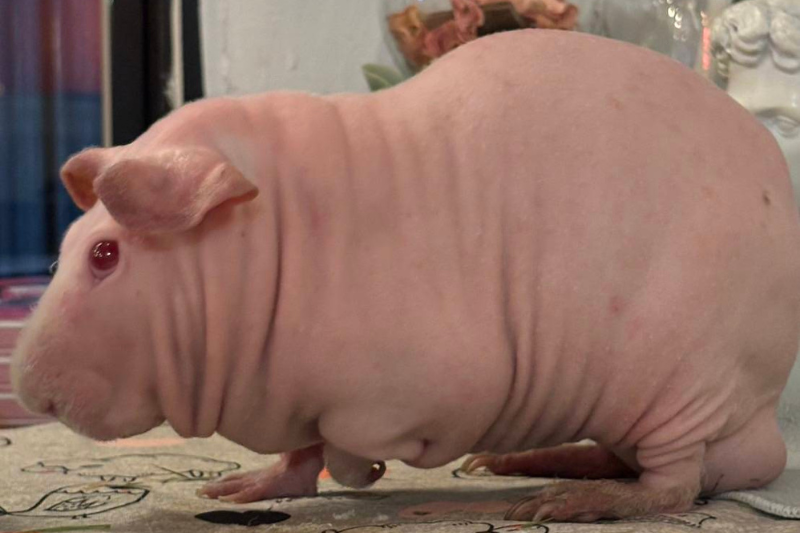
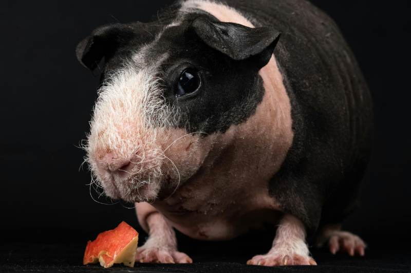
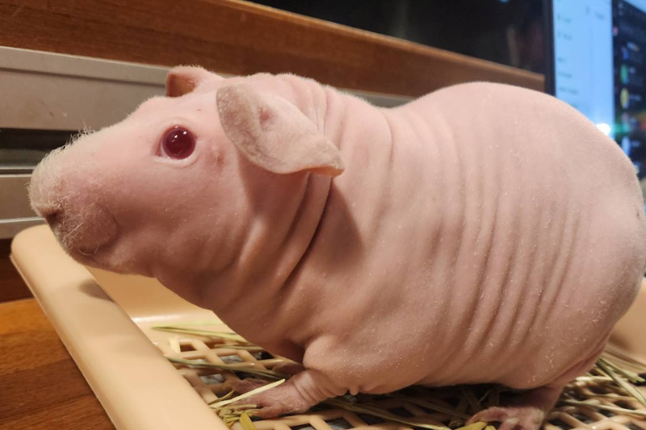

無毛天竺鼠全身幾乎光溜溜，但在鼻頭和腳上還是有一點毛髮，皮膚上佈滿皺褶，甚至還可以看到幾顆明顯的痣，較常看見的是粉白色與黑色。 大部分天友會暱稱粉白色無毛天竺鼠為＂小豬＂、黑色無毛天竺鼠為＂小河馬＂。 無毛天竺鼠皮膚摸起來細嫩，有時候較乾燥時會有皮屑，需要抹油護理。
無毛天竺鼠因為較少人飼養因此個性樣本不足，剛好我飼養了一隻公無毛天竺鼠叫＂國勝＂， 個性滿大膽愛探險，同時也很愛乾淨、聰明親人、會定點上廁所，對食物更是來者不拒，是妥妥的大吃貨。 無毛天天的市場比較兩極，有人很愛有人會怕，但千萬不要傷他們的心，因為他們內心跟皮膚一樣脆弱敏感喔！
無毛天竺鼠因為幾乎全身無毛，因此容易曬傷、受傷或感染，建議飼養在室內，並注意溫度控制，一般建議將室溫維持在 20 度至 26 度。 少了毛髮保護，皮膚的護理更是要隨時注意，容易外傷、乾燥脫皮、要隨時注意環境是否有粗糙物品及溫控。
作者的話： 無毛天竺鼠可能很多天友一輩子看不到幾次，更別說是實際飼養了。我很幸運能在臉書相關社團領養到 ＂國勝＂開啟了照顧無毛天竺鼠之路。 每次帶他出們總會成為路人焦點，最常被問是不是＂小豬＂。 無毛天竺鼠食慾大因此屎尿量也很驚人，需要一天清理兩次，真的要很有耐心才能駕馭喔～


© 本網站為緯育TibaMe【第94期】前端工程師專業技術養成班學員作品,僅供學習、展示之用途。